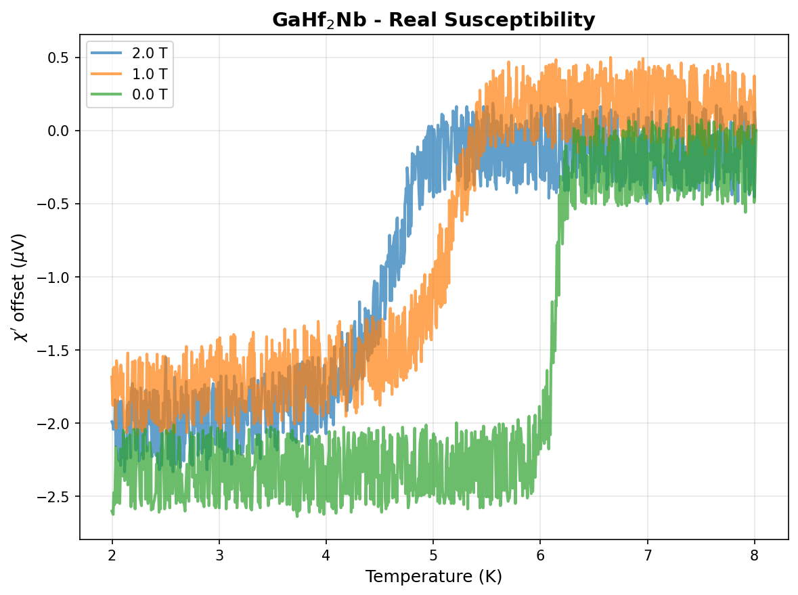
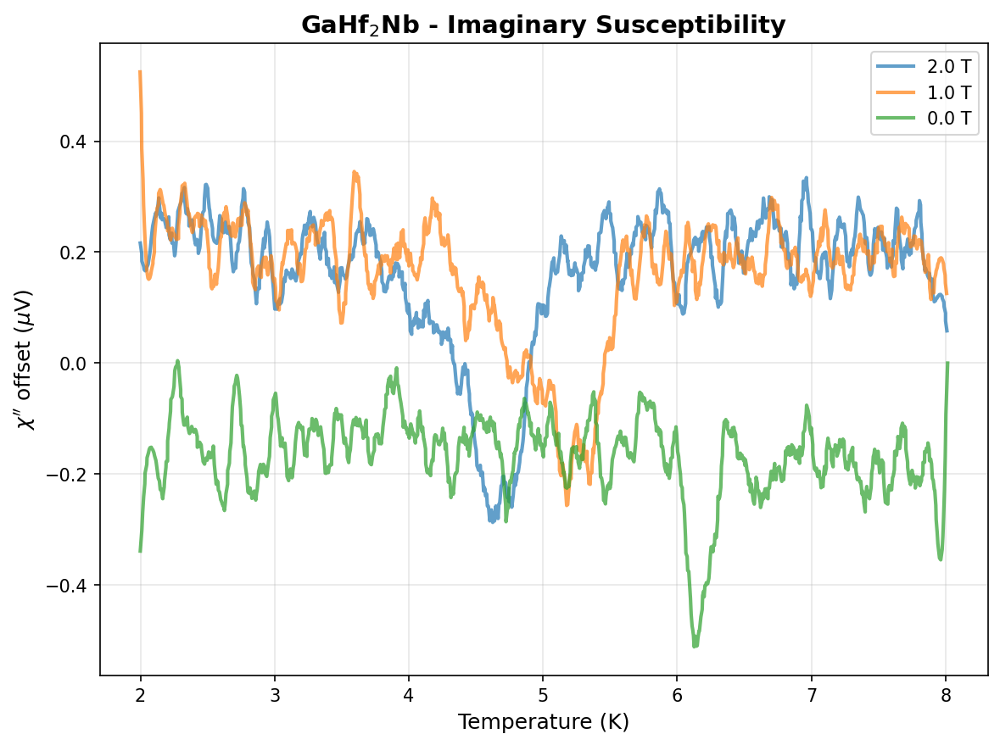
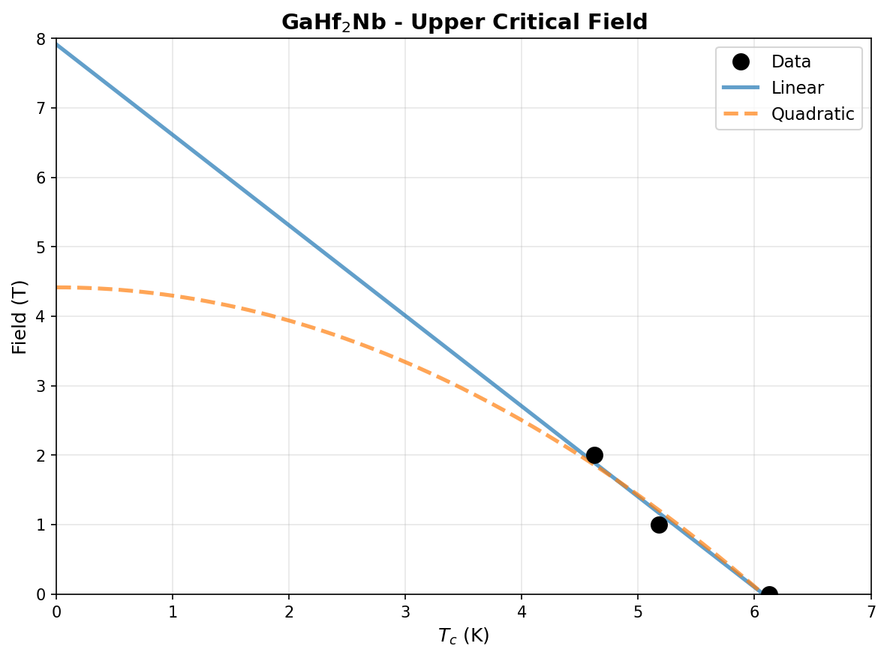

| Element | Expected (mol frac) | Measured (mol frac) | Δ (mol frac) | Δ (%) |
|---|---|---|---|---|
| Ga | 0.2500 | 0.2511 | +0.0011 | +0.11% |
| Hf | 0.5000 | 0.4997 | -0.0003 | -0.03% |
| Nb | 0.2500 | 0.2492 | -0.0008 | -0.08% |
224 entries in the Ga-Hf-Nb element system (16 on hull, 44 ICSD-tagged). Stability in meV/atom. Sorted most stable first.
| Composition | Stability (meV/atom) | ΔE (meV/atom) | ICSD | Space | Entry | CIF |
|---|---|---|---|---|---|---|
Ga3Hf1 |
-41 | -382.2 | ✓ | Ga-Hf | 17243 | CIF |
Ga1Hf1 |
-26 | -517.2 | Ga-Hf | 1963397 | CIF | |
Ga2Nb3 |
-24 | -364.5 | ✓ | Ga-Nb | 17261 | CIF |
Ga3Hf3Nb2 |
-22 | -459.5 | ✓ | Ga-Hf-Nb | 89460 | CIF |
Ga3Nb1 |
-20 | -306.3 | ✓ | Ga-Nb | 30302 | CIF |
Ga3Hf2 |
-13 | -492.7 | ✓ | Ga-Hf | 17244 | CIF |
Ga3Hf5 |
-12 | -441.1 | ✓ | Ga-Hf | 89458 | CIF |
Ga2Hf1 |
-12 | -455.2 | Ga-Hf | 1795014 | CIF | |
Ga13Nb5 |
-8 | -318.5 | ✓ | Ga-Nb | 30300 | CIF |
Ga1Hf2 |
-7 | -399.4 | ✓ | Ga-Hf | 17133 | CIF |
Ga6Hf3Nb1 |
-6 | -460.0 | Ga-Hf-Nb | 2148760 | CIF | |
Ga1 |
+0 | 0.0 | Ga | 1214704 | CIF | |
Hf1 |
+0 | 0.0 | Hf | 1215332 | CIF | |
Nb1 |
+0 | 0.0 | Nb | 1521870 | CIF | |
Nb1 |
+0 | 0.0 | Nb | 1215170 | CIF | |
Nb1 |
+0 | 0.0 | Nb | 1521875 | CIF | |
Nb1 |
+0 | 0.0 | ✓ | Nb | 685533 | CIF |
Ga13Nb5 |
+0 | -318.4 | ✓ | Ga-Nb | 89545 | CIF |
Ga1Hf1 |
+0 | -517.2 | Ga-Hf | 1377599 | CIF | |
Hf1 |
+0 | 0.1 | ✓ | Hf | 677914 | CIF |
Nb1 |
+0 | 0.1 | Nb | 2162724 | CIF | |
Nb1 |
+0 | 0.1 | Nb | 2162619 | CIF | |
Hf1 |
+0 | 0.2 | ✓ | Hf | 676495 | CIF |
Hf1 |
+0 | 0.3 | ✓ | Hf | 687554 | CIF |
Hf1 |
+0 | 0.3 | ✓ | Hf | 676527 | CIF |
Ga3Nb1 |
+0 | -305.8 | ✓ | Ga-Nb | 2017763 | CIF |
Hf1 |
+1 | 0.5 | ✓ | Hf | 687654 | CIF |
Hf1 |
+1 | 0.6 | ✓ | Hf | 2030130 | CIF |
Ga2Hf1 |
+1 | -454.3 | ✓ | Ga-Hf | 17242 | CIF |
Ga3Nb1 |
+1 | -305.3 | Ga-Nb | 303096 | CIF | |
Ga6Hf7Nb3 |
+2 | -453.1 | Ga-Hf-Nb | 2154261 | CIF | |
Ga3Hf1 |
+2 | -380.2 | Ga-Hf | 303982 | CIF | |
Ga1 |
+2 | 2.1 | ✓ | Ga | 676227 | CIF |
Hf1 |
+2 | 2.4 | Hf | 1215243 | CIF | |
Ga3Nb5 |
+5 | -336.5 | ✓ | Ga-Nb | 30301 | CIF |
Ga1 |
+7 | 6.7 | ✓ | Ga | 686543 | CIF |
Ga2Hf3 |
+10 | -446.2 | Ga-Hf | 1450804 | CIF | |
Ga4Nb5 |
+10 | -347.9 | ✓ | Ga-Nb | 17262 | CIF |
Ga1Hf1 |
+11 | -505.8 | ✓ | Ga-Hf | 17241 | CIF |
Ga10Hf11 |
+12 | -491.2 | ✓ | Ga-Hf | 89459 | CIF |
Ga1 |
+20 | 20.2 | ✓ | Ga | 2215 | CIF |
Ga1 |
+21 | 21.0 | ✓ | Ga | 4248 | CIF |
Ga1 |
+23 | 22.5 | ✓ | Ga | 107684 | CIF |
Ga1 |
+24 | 23.7 | Ga | 1214526 | CIF | |
Ga1 |
+24 | 23.7 | ✓ | Ga | 8115 | CIF |
Ga1 |
+24 | 24.0 | Ga | 1215684 | CIF | |
Ga1 |
+25 | 25.3 | ✓ | Ga | 2295 | CIF |
Hf1Nb2 |
+25 | 25.4 | Hf-Nb | 1609936 | CIF | |
Ga1 |
+26 | 26.1 | ✓ | Ga | 2814 | CIF |
Ga1 |
+26 | 26.2 | ✓ | Ga | 676193 | CIF |
Ga1 |
+26 | 26.4 | Ga | 1215417 | CIF | |
Ga1 |
+27 | 26.8 | Ga | 1214615 | CIF | |
Ga13Hf5 |
+28 | -378.8 | Ga-Hf | 1340522 | CIF | |
Ga1 |
+29 | 29.4 | Ga | 1216040 | CIF | |
Ga1 |
+30 | 30.0 | Ga | 1214793 | CIF | |
Hf1 |
+32 | 32.2 | Hf | 1216045 | CIF | |
Ga1 |
+33 | 33.0 | Ga | 1215060 | CIF | |
Ga1 |
+33 | 33.0 | Ga | 1215327 | CIF | |
Ga3Hf1 |
+33 | -349.1 | ✓ | Ga-Hf | 2033549 | CIF |
Ga3Hf1 |
+33 | -348.9 | Ga-Hf | 349578 | CIF | |
Ga1 |
+35 | 35.2 | Ga | 1215773 | CIF | |
Ga4Hf5 |
+37 | -446.3 | Ga-Hf | 1795272 | CIF | |
Hf1Nb3 |
+37 | 37.4 | Hf-Nb | 2121038 | CIF | |
Hf1Nb3 |
+37 | 37.4 | Hf-Nb | 2080496 | CIF | |
Ga1 |
+39 | 38.6 | ✓ | Ga | 2030265 | CIF |
Hf1Nb3 |
+39 | 38.7 | Hf-Nb | 2085981 | CIF | |
Hf1Nb3 |
+39 | 38.7 | Hf-Nb | 2121361 | CIF | |
Hf1Nb2 |
+39 | 39.4 | Hf-Nb | 1610026 | CIF | |
Ga1 |
+39 | 39.4 | Ga | 1521920 | CIF | |
Ga1 |
+39 | 39.4 | Ga | 1521916 | CIF | |
Ga1 |
+40 | 39.8 | Ga | 1215149 | CIF | |
Ga12Hf1 |
+42 | -76.0 | Ga-Hf | 1339637 | CIF | |
Ga1 |
+42 | 41.8 | Ga | 1215238 | CIF | |
Ga3Hf4 |
+42 | -431.7 | Ga-Hf | 1782916 | CIF | |
Ga2Nb1 |
+42 | -284.4 | Ga-Nb | 1800945 | CIF | |
Hf1 |
+43 | 43.1 | ✓ | Hf | 2015187 | CIF |
Hf1 |
+43 | 43.5 | Hf | 1801138 | CIF | |
Ga1 |
+44 | 43.9 | Ga | 1214882 | CIF | |
Ga3Nb2 |
+44 | -291.7 | Ga-Nb | 1471730 | CIF | |
Hf1Nb1 |
+45 | 45.0 | Hf-Nb | 2082128 | CIF | |
Hf1Nb3 |
+47 | 46.7 | Hf-Nb | 2082278 | CIF | |
Ga3Hf2 |
+47 | -445.9 | Ga-Hf | 1794602 | CIF | |
Ga5Nb2 |
+48 | -271.4 | Ga-Nb | 1796778 | CIF | |
Ga1Nb3 |
+49 | -178.4 | ✓ | Ga-Nb | 18843 | CIF |
Hf1 |
+52 | 51.9 | Hf | 1215422 | CIF | |
Ga1Hf3 |
+54 | -245.2 | Ga-Hf | 349552 | CIF | |
Hf1Nb2 |
+55 | 55.1 | Hf-Nb | 1592044 | CIF | |
Ga1 |
+58 | 58.5 | Ga | 1214971 | CIF | |
Hf3Nb1 |
+60 | 60.0 | Hf-Nb | 2120999 | CIF | |
Hf3Nb1 |
+60 | 60.1 | Hf-Nb | 2080632 | CIF | |
Ga1 |
+62 | 61.6 | Ga | 1280429 | CIF | |
Ga3Nb2 |
+62 | -274.1 | Ga-Nb | 1794603 | CIF | |
Ga1 |
+63 | 63.4 | Ga | 1215595 | CIF | |
Hf1Nb3 |
+65 | 64.5 | Hf-Nb | 314853 | CIF | |
Hf1Nb1 |
+65 | 65.5 | Hf-Nb | 2085845 | CIF | |
Hf1Nb1 |
+70 | 69.9 | Hf-Nb | 2080427 | CIF | |
Hf3Nb1 |
+70 | 70.2 | Hf-Nb | 2121448 | CIF | |
Hf3Nb1 |
+70 | 70.3 | Hf-Nb | 2086117 | CIF | |
Ga1Hf3 |
+71 | -228.1 | Ga-Hf | 304008 | CIF | |
Hf1 |
+72 | 71.7 | Hf | 1214531 | CIF | |
Hf1 |
+72 | 71.9 | ✓ | Hf | 676154 | CIF |
Hf1 |
+72 | 72.0 | Hf | 1215689 | CIF | |
Nb1 |
+76 | 75.9 | Nb | 1215883 | CIF | |
Hf5Nb1 |
+77 | 76.9 | Hf-Nb | 1435687 | CIF | |
Ga1Hf2 |
+77 | -322.0 | Ga-Hf | 1787229 | CIF | |
Ga1Hf3 |
+79 | -220.4 | Ga-Hf | 325066 | CIF | |
Hf1 |
+80 | 79.9 | Hf | 1215778 | CIF | |
Hf1 |
+83 | 83.1 | Hf | 1214620 | CIF | |
Ga1Nb2 |
+84 | -220.1 | Ga-Nb | 1787230 | CIF | |
Ga1 |
+91 | 90.9 | Ga | 1215862 | CIF | |
Ga3Nb5 |
+95 | -246.7 | ✓ | Ga-Nb | 30303 | CIF |
Hf1Nb1 |
+95 | 95.2 | Hf-Nb | 2084788 | CIF | |
Ga1Nb3 |
+102 | -125.8 | Ga-Nb | 348666 | CIF | |
Ga5Hf2 |
+102 | -311.5 | Ga-Hf | 1796796 | CIF | |
Hf2Nb1 |
+104 | 104.1 | Hf-Nb | 1449718 | CIF | |
Ga2Hf1 |
+105 | -350.4 | Ga-Hf | 1795671 | CIF | |
Nb1 |
+105 | 105.0 | Nb | 1214992 | CIF | |
Nb1 |
+105 | 105.0 | Nb | 1280310 | CIF | |
Ga3Hf1 |
+105 | -277.2 | Ga-Hf | 325092 | CIF | |
Hf1Nb1 |
+108 | 107.6 | Hf-Nb | 2082578 | CIF | |
Hf3Nb1 |
+113 | 112.5 | Hf-Nb | 325395 | CIF | |
Ga2Hf1 |
+114 | -341.2 | Ga-Hf | 1591365 | CIF | |
Hf1Nb1 |
+119 | 118.9 | Hf-Nb | 305663 | CIF | |
Hf1Nb1 |
+119 | 119.0 | Hf-Nb | 1522339 | CIF | |
Hf3Nb1 |
+125 | 124.5 | Hf-Nb | 2082428 | CIF | |
Ga1Hf1 |
+126 | -391.0 | Ga-Hf | 339230 | CIF | |
Hf3Nb1 |
+131 | 131.3 | Hf-Nb | 349881 | CIF | |
Hf3Nb1 |
+135 | 135.2 | Hf-Nb | 299948 | CIF | |
Hf1 |
+139 | 138.6 | Hf | 1214887 | CIF | |
Nb1 |
+145 | 144.9 | ✓ | Nb | 2030157 | CIF |
Ga1 |
+145 | 145.3 | Ga | 1215951 | CIF | |
Nb1 |
+147 | 147.2 | Nb | 1215705 | CIF | |
Hf3Nb1 |
+148 | 147.7 | Hf-Nb | 310490 | CIF | |
Ga1Nb3 |
+151 | -76.8 | Ga-Nb | 324180 | CIF | |
Ga1Hf2Nb1 |
+158 | -148.8 | Ga-Hf-Nb | 416385 | CIF | |
Ga2Hf1Nb2 |
+158 | -260.0 | Ga-Hf-Nb | 1253104 | CIF | |
Ga1Nb3 |
+160 | -67.6 | Ga-Nb | 309682 | CIF | |
Nb1 |
+167 | 166.6 | Nb | 1214814 | CIF | |
Ga1Nb3 |
+167 | -60.7 | Ga-Nb | 299140 | CIF | |
Hf1Nb3 |
+167 | 167.2 | Hf-Nb | 304311 | CIF | |
Nb1 |
+174 | 173.6 | ✓ | Nb | 2030113 | CIF |
Ga1Nb1 |
+176 | -174.2 | Ga-Nb | 1229535 | CIF | |
Hf1 |
+180 | 179.7 | Hf | 1215154 | CIF | |
Hf1 |
+180 | 179.7 | ✓ | Hf | 684885 | CIF |
Hf1 |
+180 | 179.8 | Hf | 1215867 | CIF | |
Hf1 |
+180 | 179.9 | Hf | 1522340 | CIF | |
Ga1Hf1Nb2 |
+182 | -124.8 | Ga-Hf-Nb | 745718 | CIF | |
Ga3Nb1 |
+190 | -116.2 | Ga-Nb | 320224 | CIF | |
Hf1Nb1 |
+192 | 191.9 | Hf-Nb | 2083244 | CIF | |
Hf1Nb1 |
+197 | 197.3 | Hf-Nb | 337205 | CIF | |
Nb1 |
+198 | 197.7 | Nb | 1215259 | CIF | |
Nb1 |
+202 | 202.0 | Nb | 1801139 | CIF | |
Nb1 |
+202 | 202.1 | ✓ | Nb | 2031499 | CIF |
Ga3Nb1 |
+205 | -100.8 | Ga-Nb | 344710 | CIF | |
Hf1Nb1 |
+207 | 207.1 | Hf-Nb | 1229761 | CIF | |
Hf1Nb1 |
+210 | 209.7 | Hf-Nb | 326747 | CIF | |
Nb1 |
+213 | 213.0 | Nb | 1214903 | CIF | |
Hf1 |
+218 | 217.8 | Hf | 1214798 | CIF | |
Ga2Hf1 |
+220 | -234.7 | Ga-Hf | 1341011 | CIF | |
Ga1Nb1 |
+224 | -125.9 | Ga-Nb | 338786 | CIF | |
Ga2Nb1 |
+233 | -93.1 | Ga-Nb | 1576915 | CIF | |
Ga1Nb1 |
+239 | -111.1 | Ga-Nb | 328328 | CIF | |
Hf1 |
+243 | 243.4 | Hf | 1214976 | CIF | |
Ga3Nb5 |
+254 | -88.2 | ✓ | Ga-Nb | 89543 | CIF |
Hf1Nb3 |
+254 | 254.0 | Hf-Nb | 321032 | CIF | |
Hf1Nb3 |
+255 | 254.6 | Hf-Nb | 345518 | CIF | |
Ga1Hf1 |
+260 | -257.4 | Ga-Hf | 307688 | CIF | |
Hf1 |
+267 | 266.9 | Hf | 1215065 | CIF | |
Nb1 |
+268 | 268.4 | Nb | 1214636 | CIF | |
Ga1Hf1 |
+269 | -248.1 | Ga-Hf | 1229520 | CIF | |
Ga1Hf3 |
+283 | -17.0 | Ga-Hf | 314550 | CIF | |
Ga1Hf1 |
+284 | -233.4 | Ga-Hf | 328772 | CIF | |
Ga1 |
+285 | 284.7 | Ga | 1215506 | CIF | |
Ga2Nb1 |
+289 | -37.0 | Ga-Nb | 1791938 | CIF | |
Ga2Hf1Nb1 |
+291 | -152.3 | Ga-Hf-Nb | 521013 | CIF | |
Nb1 |
+291 | 291.4 | Nb | 1215438 | CIF | |
Nb1 |
+293 | 293.0 | Nb | 1216064 | CIF | |
Hf1Nb2 |
+293 | 293.1 | Hf-Nb | 1520528 | CIF | |
Nb1 |
+296 | 296.2 | ✓ | Nb | 2029911 | CIF |
Nb1 |
+297 | 297.4 | Nb | 1215348 | CIF | |
Ga1Nb1 |
+303 | -46.8 | Ga-Nb | 1522282 | CIF | |
Ga1Nb1 |
+304 | -46.5 | Ga-Nb | 307244 | CIF | |
Ga1Hf2Nb1 |
+310 | 3.7 | Ga-Hf-Nb | 746824 | CIF | |
Nb1 |
+322 | 321.8 | Nb | 1214547 | CIF | |
Nb1 |
+322 | 321.8 | ✓ | Nb | 676151 | CIF |
Nb1 |
+324 | 323.6 | Nb | 1215794 | CIF | |
Nb1 |
+344 | 343.7 | Nb | 1215081 | CIF | |
Ga1Hf1Nb2 |
+363 | 56.2 | Ga-Hf-Nb | 489285 | CIF | |
Ga1Nb1 |
+371 | 21.2 | Ga-Nb | 1106429 | CIF | |
Hf1 |
+379 | 379.3 | Hf | 1214709 | CIF | |
Ga1Hf1 |
+379 | -137.9 | Ga-Hf | 1106873 | CIF | |
Ga1Nb1 |
+383 | 32.4 | Ga-Nb | 1244251 | CIF | |
Ga1Hf2 |
+394 | -5.5 | Ga-Hf | 1415668 | CIF | |
Ga3Hf1 |
+442 | 60.2 | Ga-Hf | 314524 | CIF | |
Nb1 |
+442 | 442.5 | Nb | 1214725 | CIF | |
Hf2Nb1 |
+443 | 442.8 | Hf-Nb | 1609953 | CIF | |
Hf2Nb1 |
+467 | 467.4 | Hf-Nb | 1610043 | CIF | |
Hf2Nb1 |
+510 | 510.0 | Hf-Nb | 1594287 | CIF | |
Ga1Hf1Nb1 |
+527 | 118.1 | Ga-Hf-Nb | 952110 | CIF | |
Ga2Hf1 |
+530 | 74.6 | Ga-Hf | 1415667 | CIF | |
Hf1 |
+577 | 577.2 | Hf | 1277911 | CIF | |
Ga1Nb1 |
+589 | 239.2 | Ga-Nb | 1244252 | CIF | |
Ga3Nb1 |
+596 | 290.2 | Ga-Nb | 313638 | CIF | |
Nb1 |
+601 | 601.3 | Nb | 1215616 | CIF | |
Ga2Hf1Nb1 |
+629 | 186.0 | Ga-Hf-Nb | 1144478 | CIF | |
Ga1Nb2 |
+647 | 343.6 | Ga-Nb | 1592006 | CIF | |
Hf1 |
+658 | 658.0 | Hf | 1215600 | CIF | |
Ga1Hf2 |
+805 | 405.8 | Ga-Hf | 1594278 | CIF | |
Hf1Nb1 |
+1001 | 1001.4 | Hf-Nb | 1104848 | CIF | |
Ga1Hf1Nb1 |
+1105 | 696.2 | Ga-Hf-Nb | 920386 | CIF | |
Ga1Hf1Nb1 |
+1270 | 861.4 | Ga-Hf-Nb | 863818 | CIF | |
Hf1 |
+1376 | 1376.3 | Hf | 1215956 | CIF | |
Nb1 |
+1385 | 1385.1 | Nb | 1215972 | CIF | |
Ga1Hf1 |
+1489 | 971.7 | Ga-Hf | 1222549 | CIF | |
Ga1Nb1 |
+1666 | 1315.4 | Ga-Nb | 1222564 | CIF | |
Ga2Nb1 |
+1973 | 1646.7 | Ga-Nb | 1237486 | CIF | |
Ga2Hf1 |
+2081 | 1625.6 | Ga-Hf | 1237697 | CIF | |
Nb1 |
+2545 | 2544.7 | Nb | 1215527 | CIF | |
Hf1Nb1 |
+2623 | 2622.9 | Hf-Nb | 1222790 | CIF | |
Hf1 |
+2687 | 2687.0 | Hf | 1215511 | CIF | |
Hf2Nb1 |
+2786 | 2786.4 | Hf-Nb | 1238492 | CIF | |
Ga1Hf2 |
+3000 | 2601.1 | Ga-Hf | 1237696 | CIF | |
Ga1Nb2 |
+3488 | 3184.0 | Ga-Nb | 1237485 | CIF | |
Hf1Nb2 |
+3902 | 3901.8 | Hf-Nb | 1238491 | CIF |



| Model | Hc2(0) (T) | Tc (K) |
|---|---|---|
| Linear | 7.912 | 6.077 |
| Quadratic | 4.417 | 6.077 |
Ga1
| Tc = 6.07 K
| 10.1103/PhysRevB.10.4572
80 known superconductor(s) in the GaHf2Nb element system. Sorted by Tc descending. ■ closest composition ■ closest Tc
| Compound | Formula | Tc (K) | Reference |
|---|---|---|---|
| Nb3Ga | Ga1Nb3 |
20.50 | Search |
| Ga0.4Nb0.6 | Ga0.4Nb0.6 |
20.30 | Search |
| Ga1Nb3 | Ga1Nb3 |
20.30 | Search |
| Nb-Ga | Ga0.32Nb0.68 |
20.20 | Search |
| Nb-Ga | Ga0.245Nb0.755 |
20.20 | Search |
| Nb3Ga | Ga0.245Nb0.755 |
20.20 | Search |
| Ga1Nb3 | Ga1Nb3 |
20.10 | Search |
| Nb3Ga | Ga0.25Nb0.75 |
20.00 | Search |
| Ga0.251Nb0.749 | Ga0.251Nb0.749 |
19.90 | Search |
| Nb3Ga | Ga1Nb3 |
19.80 | Search |
| Nb80Ga20 | Ga20Nb80 |
18.20 | Search |
| Nb75(Ga,Al)25 | Ga25Nb75 |
17.60 | Search |
| Hf0.33Nb0.67 | Hf0.33Nb0.67 |
17.00 | Search |
| Nb3Ga | Ga1Nb3 |
16.50 | Search |
| Nb-Ga | Ga0.3Nb0.7 |
16.30 | Search |
| Nb3Ga | Ga1Nb3 |
16.10 | Search |
| Nb3Ga | Ga1Nb3 |
16.10 | Search |
| Nb3Ga | Ga1Nb3 |
16.00 | Search |
| Nb78Ga22 | Ga22Nb78 |
15.60 | Search |
| Nb80Ga20 | Ga20Nb80 |
15.40 | Search |
| Nb0.8Ga0.2 | Ga0.2Nb0.8 |
15.30 | Search |
| Nb80Ga20 | Ga20Nb80 |
15.20 | Search |
| Ga1Nb3 | Ga1Nb3 |
14.50 | Search |
| Nb3Ga | Ga1Nb3 |
14.50 | Search |
| Nb-Ga | Ga0.19Nb0.81 |
13.30 | Search |
| Nb3Ga | Ga0.19Nb0.81 |
13.30 | Search |
| Hf0.15Nb0.85 | Hf0.15Nb0.85 |
9.85 | Search |
| Nb | Nb1 |
9.71 | 10.1103/PhysRevB.72.064503 |
| Hf1-xNbx | Hf0.1Nb0.9 |
9.60 | 10.1103/PhysRev.123.1569 |
| Hf1-xNbx | Hf0.05Nb0.95 |
9.52 | 10.1103/PhysRev.123.1569 |
| Hf0.5Nb0.5 | Hf0.5Nb0.5 |
9.50 | Search |
| Hf1-xNbx | Hf0.2Nb0.8 |
9.48 | 10.1103/PhysRev.123.1569 |
| Nb | Nb1 |
9.47 | 10.1103/PhysRevB.72.064503 |
| Nb | Nb1 |
9.40 | Search |
| Nb | Nb1 |
9.40 | Search |
| Nb | Nb1 |
9.27 | 10.1103/PhysRevB.9.108 |
| Nb | Nb1 |
9.25 | 10.1103/PhysRev.149.231 |
| Nb1-xOx | Nb99.976O0.024 |
9.23 | 10.1103/PhysRevB.9.888 |
| Nb | Nb1 |
9.23 | Search |
| Nb | Nb1 |
9.21 | 10.1103/PhysRev.176.562 |
| Nb | Nb1 |
9.20 | 10.1103/PhysRevLett.79.4262 |
| Nb | Nb1 |
9.20 | 10.1103/PhysRev.123.1569 |
| Nb | Nb1 |
9.20 | 10.1143/JPSJ.22.238 |
| Nb | Nb1 |
9.18 | Search |
| Nb | Nb1 |
9.16 | Search |
| Nb | Nb1 |
9.10 | Search |
| Nb | Nb1 |
9.09 | 10.1103/PhysRevB.72.064503 |
| Nb1-xOx | Nb99.861O0.139 |
9.03 | 10.1103/PhysRevB.9.888 |
| Nb | Nb1 |
8.81 | 10.1103/PhysRevB.72.064503 |
| Nb | Nb1 |
8.80 | Search |
| Ga1 | Ga1 |
8.50 | Search |
| Nb1-xOx | Nb99.445O0.555 |
8.50 | 10.1103/PhysRevB.9.888 |
| Ga1 | Ga1 |
8.45 | 10.1103/PhysRevLett.20.1496 |
| Hf1-xNbx | Hf0.5Nb0.5 |
8.31 | 10.1103/PhysRev.123.1569 |
| Ga | Ga1 |
8.20 | 10.1103/PhysRevB.34.4920 |
| Nb3Ga | Ga1Nb3 |
8.20 | Search |
| Nb1-xOx | Nb99.078O0.922 |
8.10 | 10.1103/PhysRevB.9.888 |
| Nb | Nb1 |
7.95 | 10.1103/PhysRevB.72.064503 |
| Ga1 | Ga1 |
7.85 | Search |
| Nb1-xOx | Nb98.68O1.32 |
7.85 | 10.1103/PhysRevB.9.888 |
| amorphous-Ga | Ga1 |
7.84 | 10.1103/PhysRevB.11.738 |
| Ga1 | Ga1 |
7.60 | Search |
| Nb1-xOx | Nb98O2 |
7.33 | 10.1103/PhysRevB.9.888 |
| Nb | Nb1 |
7.13 | 10.1103/PhysRevB.72.064503 |
| Nb1-xOx | Nb96.5O3.5 |
6.13 | 10.1103/PhysRevB.9.888 |
| beta-Ga | Ga1 |
6.07 | 10.1103/PhysRevB.10.4572 |
| beta-Ga | Ga1 |
6.04 | 10.1103/PhysRevB.97.184517 |
| Hf0.76Nb0.25 | Hf0.76Nb0.25 |
4.20 | Search |
| Ga1 | Ga1 |
3.07 | 10.1103/PhysRevB.10.4572 |
| Nb1O1 | Nb1O1 |
1.50 | Search |
| O1b1 | Nb1O1 |
1.39 | Search |
| Ga3Nb5 | Ga3Nb5 |
1.35 | Search |
| Nb1O1 | Nb1O1 |
1.25 | Search |
| Ga1 | Ga1 |
1.08 | 10.1103/PhysRev.150.315 |
| alpha-Ga | Ga1 |
1.08 | 10.1103/PhysRevB.97.184517 |
| Ga | Ga1 |
1.08 | 10.1103/PhysRev.134.A385 |
| Ga | Ga1 |
1.06 | Search |
| Ga1Hf2 | Ga1Hf2 |
0.21 | Search |
| Hf | Hf1 |
0.13 | Search |
| Hf | Hf1 |
0.13 | Search |